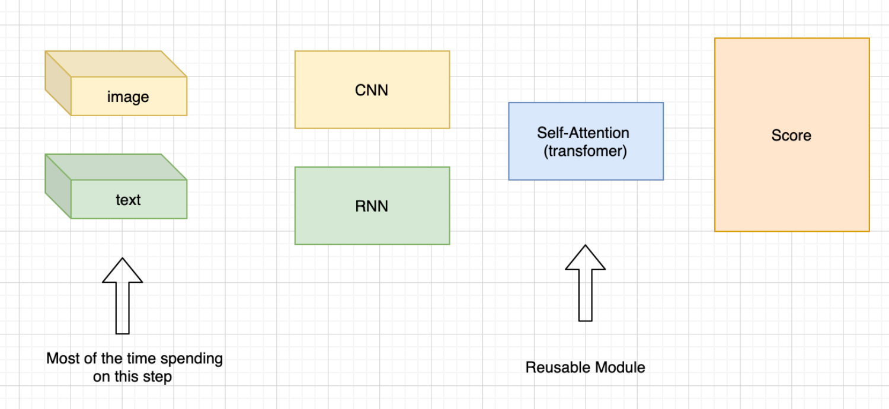
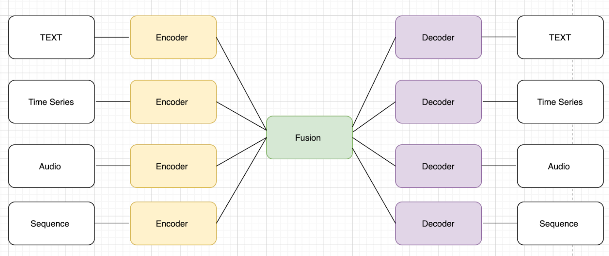

Introduction¶
Table of contents
What This Is¶
Wellcome to Denver in Language Understanding! This is a library and a toolbox produced by NLP Team, Ftech.AI that makes it easier to use about Language Understanding (LU). We present the idea of Denver as a flexible, extensible and easy to use toolbox which allows users to replicate, training the dialogue related experiments without writing code. Denver implements the “well-experimental“ module such as Intent Classification, Named Entity Recognition, FAQ with novel approach to deep learning building based on the high level of abstraction: Data types and declarative configuration files Data type abstraction allows for reusability of model and interface standard. Declarative model definition configuration files enable inexperienced users to obtain effective models and increase the productivity of expert users. Alongside these two innovations, Denver introduces the unified view of all the deep learning architecture called Encoder Fusion Decoder (EFD) that can be instantiated to perform a vast amount of machine learning in the dialogue domain. The innovations make it possible for engineers, sale team and product team member to adopt deep learning model for their task, replicate and move fast with experiments to satisfy fast-growing client ‘s requirements and data evolution.
Why We Built This¶
Let’s have a retrospective about the blooming of AI recently and the main workhorse behind it: “Deep learning”. Over the course of the last ten years, deep learning models have demonstrated to be highly effective in almost every machine learning task in different domains including (but not limited to) computer vision, natural language, speech, and recommendation. The wide adoption in both research and industry has been boosted by sophisticated software libraries such as Theano , TensorFLow, Keras, pytorch. Their main value has been to provide tensor algebra primitives with efficient implementations which, together with the massively parallel computation available on GPUs, enabled researchers to scale training to bigger datasets. Those software provided the standard implementation of automatic “gradient calculation“ which greatly simplified the model implementation Researchers do not need to spend time re-implementing these basic building blocks from scratch and now having fast and reliable implementations of the same, were able to focus on models and architectures, which lead to the first wave of deep learning exposure. However; when coming to commercialized software, it is very difficult for researchers to deliver the product-ready software. not to mention, it is a really time consuming process if the researchers need to handle all the tasks from data preparation to model delivery. We claim that the second wave of deep learning expose should make it a democratization in which software developer, business analytics and broader audience to adopt the technology.

The outspread of application of artificial neural network architectures in a wide variety of tasks encourage the common practices regarding how to handle certain types of input information emerged. In other words, we got a more “unified“ view about the fundamental tasks in ML We claim that when modeling a particular data for a particular task the model architectures are unchanged while practitioners focus mainly for “data interfacing“. take an example in computer vision task and natural language processing task as an example to prove this observation. When faced with a computer vision problem, a practitioner preprocesses data using the pipeline that resizes images, augments them with some transformation and maps them into 3D tensors. Something similar happens for text data, where text is tokenized either into a list of words or characters or word pieces, a vocabulary with associated numerical IDs is collected and sentences are transformed into vectors of integers Denver, a deep learning toolbox that encapsulates the above idea, aims to provide the best practices from the internal team’s research work and take advantage of inheritance of code modularity. Denver makes it much easier for practitioners to compose their deep learning models by just declaring their data and task and to make code reusable, extensible and favor best practices.
{kind=link}
Architecture¶
In Denver, every model is defined in terms of encoders that encode different features of an input data point, a combiner which combines information coming from the different encoders, and decoders that decode the information from the combiner into one or more output features. This generic architecture is referred to as Encoders-Fusion-Decoders (EFD).
{kind=link}
This architecture is introduced because it maps naturally most of the architectures of deep learning m odels and allows for modular composition. This characteristic, enabled by the data type abstraction, allows for defining models by just declaring the data types of the input and output features involved in the task and assembling standard sub-modules accordingly rather than writing a full model from scratch.